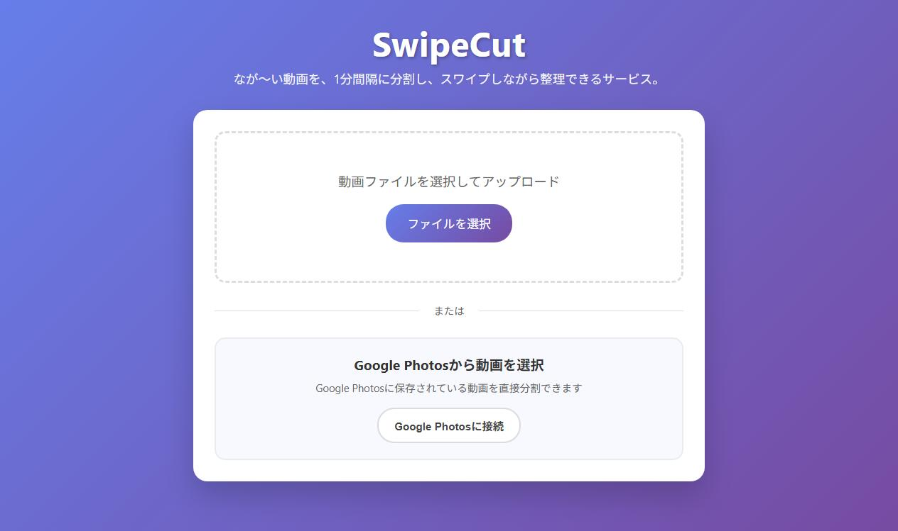
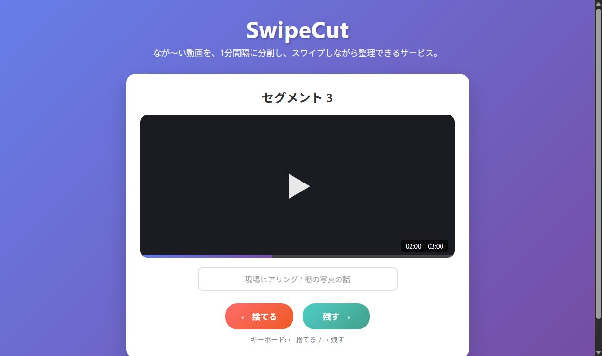
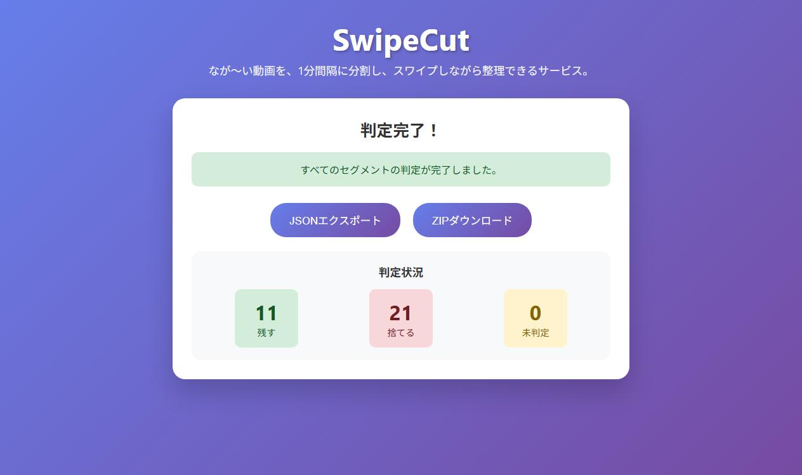

結論
きっかけ
ヒアリングの動画整理が、地味に重かった
いろいろな現場へヒアリングに行って、様子を動画で撮り、あとでチームに共有していました。ただ、この「あとで共有する」が地味に大変でした。
撮った動画は長い。全部送っても誰も最後まで見ません。かといって必要なところだけを切り出そうとすると、編集ソフトを開き、タイムラインをスクラブして、いる/いらないを判断して書き出す。数分の動画のために、その往復をやることになります。現場ごとに何本もたまると、これがつらい。
一つひとつの判断は難しくありません。見れば数秒で決まります。大変なのは、その判断を「動画編集」という重い操作に乗せ換えることのほうでした。
設計
「編集」をやめて、「仕分け」にする
きれいに編集するのをやめて、まず機械的に1分ごとに分割してしまう。あとは出てきた断片を1つずつ見て、「残す/捨てる」だけ決める。判断を、編集ではなく仕分けにする。
その仕分けを、いちばん軽いUIに寄せました。思いついたのがTinderのスワイプです。カードが1枚出て、右で残す・左で捨てる。矢印キーでも振れる。残すものにだけ、あとで探せるよう短い名前をつける。最後に、残したものだけをZIPでまとめて落とす。
動くもの
3画面だけ



中身
薄いAPIと、中断から戻れる状態
判定はセグメント単位でDBに持たせています。だから途中でブラウザを閉じても、次に開けば未判定の続きから戻れます。状態を全部フロントのメモリに載せるとリロードで最初からになる。動画の仕分けは件数が多いので、そこは早い段階でサーバ側に寄せました。
POST /api/upload?chunk_sec=60 動画を1分ごとに分割
GET /api/next_segment?video_id 次の未判定セグメント
POST /api/decide?segment_id&decision=keep|drop 判定を保存
GET /api/export_zip?video_id keepだけをZIPで返す正直な結果
あまり使われず、今ならAIがやる
このツールはあまり使われませんでした。動画をサーバで分割する構成は、長い動画だと待ちが出て気軽さが落ちる。そして何より、「動画を細かく仕分けたい」場面が、思ったほど日常には多くなかった。課題は本物でしたが、それが毎日起きるのか、たまに起きるのかを、作る前に見ていませんでした。
状況も変わりました。いまのモデルは長い動画をそのまま読み、要点といらない所を言えるようになってきています。「この現場ヒアリングから意思決定に効く部分だけ3分に」と頼めば、近いことができる。SwipeCutは人間の判断を最軽量UIに寄せる道具でしたが、その「人間が全部見て振る」ところ自体を、AIが肩代わりし始めています。
それでも
作ってよかったこと
うまくいかなかった話ばかりですが、自分には意味のある一本でした。「重い操作を、軽い判断に置き換える」という設計の型を最初に試せた。FFmpegでの分割、薄いAPI、状態をサーバに持たせて中断復帰する構成を通しで作れた。そして、AIと一緒に作ったものを自分以外の人に配って使ってもらおうとした、最初の経験でした。
このあと作った katazuku-shukatsu では、「人間には最後の判断だけ残す」「状態は正本に持たせて中断から戻す」を、もっと真剣にやっています。その原型を、この小さな動画ツールで一度触っていました。